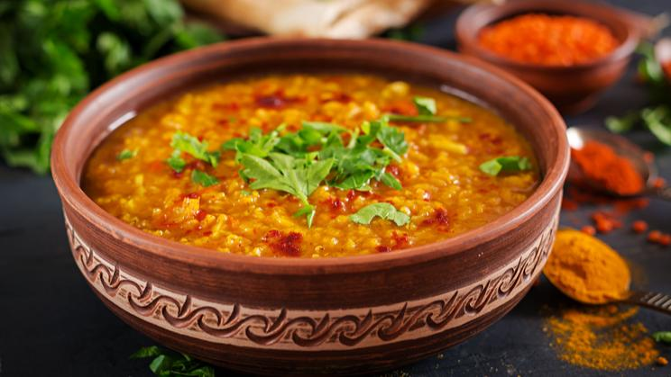

Tomato Pappu

Description
Tomato Pappu is a traditional favorite in Andhra Households and is made very frequently. In the Rayalaseema region of Andhra, dal is prepared very thick and if you mix it with rice and ghee, you should actually be able to make rice balls of it.
Ingredients
- MAGGI Masala-ae-Magic
- Arhar Dal
- Water
- Turmeric Powder
- Tomato
- Tamarind
- Cooked Rice
- Salt (To Taste)
- Oil
- Mustard Seeds
Steps
- Prepare ingredients as mentioned in the list.
- Wash the dal and pressure cook with 2½ cup water, turmeric powder, tomatoes and tamarind for 3 whistles. Mash the dal and add salt as per taste.
- Heat oil in a karahi, add mustard seeds and cumin seeds and allow it to splutter. Add mashed garlic, onion, dry red chillies and curry leaves. Cook till the onion turns pink and mixture is aromatic.
- Add the above seasoning and MAGGI Masala-ae-Magic to cooked and mashed dal. Add some hot water if too thick to get desired consistency. Simmer for a few minutes.
- Add salt if required and garnish with coriander leaves. Serve hot with steamed rice.
Return to the Top page
Return to the Main page